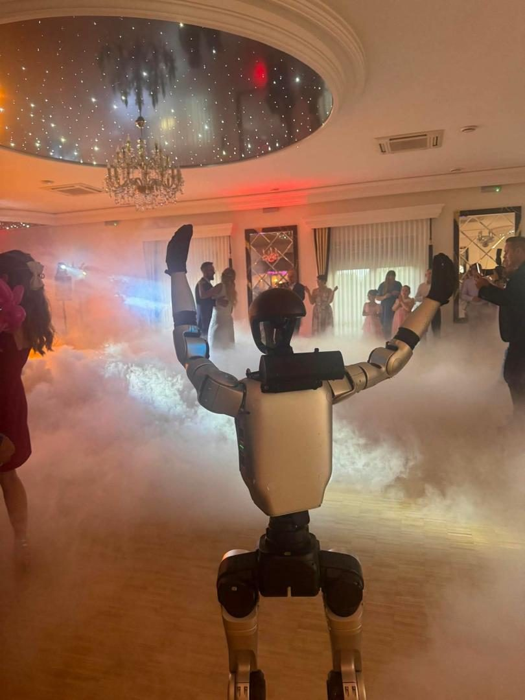

- Strona główna
- Blog
- Ile kosztuje wesele 2026
Przewodnik eventowy · Wesele
Ile kosztuje wesele w 2026 roku? Koszt na 50, 100, 150 i 200 osób, pozycja po pozycji
Wesele dla 100 osób kosztuje w 2026 roku od około 60 000 do 110 000 zł, a w wersji premium ponad 120 000 zł — tyle wynika z publicznych cenników i analiz. Rozbijamy tę kwotę pozycja po pozycji, pokazujemy koszt na 50, 80, 100, 150 i 200 osób w czterech województwach, liczymy koszt od osoby i wskazujemy wydatki, o których pary zapominają.

„Ile kosztuje wesele” to pytanie, na które internet odpowiada od 40 000 do 250 000 zł — i obie liczby są prawdziwe. Różnicę robią liczba gości, województwo, standard sali i kilka decyzji, które pary podejmują w pierwszych tygodniach planowania. Ten poradnik zbiera dane z publicznych cenników, analiz portali i ofert (stan: październik 2026), podaje źródło przy każdej liczbie i rozbija budżet na pozycje, żeby dało się policzyć własne wesele, a nie „średnie”.
Ile kosztuje wesele w 2026: szybka odpowiedź
| Liczba gości | Koszt wesela | Źródło |
|---|---|---|
| 50 osób | 40 000–70 000 zł | freenance.io, 2026 |
| 80–120 osób | 60 000–150 000 zł | freenance.io, 2026 |
| 100 osób, rozsądne planowanie | 60 000–100 000 zł; orientacyjny budżet ok. 88 000 zł | Eska / Oferendo, 2026 |
| 100 osób, „przyzwoite” wesele | 90 000–110 000 zł | cenauslug.pl, 2026 |
| Premium w Krakowie, Trójmieście, pod Warszawą | 180 000–250 000 zł i więcej | freenance.io, 2026 |
Jedna liczba porządkuje wszystko: talerzyk (sala plus catering) to 50–60% budżetu (Interia, 2026). Reszta — muzyka, zdjęcia, dekoracje, ubiór, obrączki — rozkłada się na kilkanaście mniejszych pozycji, z których każda ma swoje widełki.
Koszt wesela na 50, 80, 100, 150 i 200 osób według województw
Wyliczenia Interii z 23 października 2026 roku dla czterech województw. Różnica między mazowieckim a świętokrzyskim to przy 100 osobach 28 000 zł.
| Goście | mazowieckie | małopolskie | wielkopolskie | świętokrzyskie |
|---|---|---|---|---|
| 50 | 77 700 zł | 69 600 zł | 66 300 zł | 57 400 zł |
| 80 | 94 100 zł | 83 600 zł | 79 600 zł | 69 200 zł |
| 100 | 105 000 zł | 93 000 zł | 88 500 zł | 77 000 zł |
| 150 | 132 300 zł | 116 400 zł | 110 700 zł | 96 600 zł |
| 200 | 159 600 zł | 139 800 zł | 132 900 zł | 116 200 zł |
Z tabeli wynika zasada, o której pary zapominają: wesele na 50 osób kosztuje około 70% wesela na 100 osób, nie połowę. Fotograf, DJ, suknia, dekoracje i obrączki kosztują tyle samo przy 50 i przy 150 gościach.
Koszt wesela od osoby: ile kosztuje talerzyk
Talerzyk to skrót myślowy na salę z cateringiem — obiad, kolacja, często alkohol i serwis. Widełki z 2026 roku:
- 350–650 zł od osoby w popularnych salach; w hotelach i domach weselnych klasy średniej i premium standardem staje się 450–550 zł (cenauslug.pl).
- 350–600 zł średnio, z alkoholem i serwisem; sama sala dodatkowo 3 000–10 000 zł, choć wiele miejsc łączy ją z cateringiem (freenance.io).
- 300–350 zł średnio według ekspertek Interii, w wariantach premium 400–600 zł; Kraków 180–450 zł (bliżej górnej granicy), Warszawa i okolice 350–600 zł.
- około 300 zł średnio, w mniejszych miejscowościach 200–250 zł (wroclaw.pl, styczeń 2026).
- 280–320 zł w najtańszych opcjach (remizy, domy kultury) — ale tam dochodzą wynajem obiektu, prąd, obsługa i sprzątanie, więc „tania” opcja często zrównuje się z kompleksową (cenauslug.pl).
Każdy dodatkowy gość to 350–600 zł. Skrócenie listy ze 120 do 80 osób oszczędza 14 000–24 000 zł — więcej niż cały budżet na fotografa i dekoracje razem (freenance.io).
Cennik wesela pozycja po pozycji
Widełki z publicznych źródeł dla wesela na około 100 osób. Gdy źródła się różnią, podajemy oba.
| Pozycja | Koszt | Źródło |
|---|---|---|
| Sala i catering (talerzyk × goście) | 30 000–60 000 zł | freenance.io, 2026 |
| Alkohol | 50–100 zł/os.; wódka 0,5 l/os. po 40–55 zł za butelkę, wino 25–40 zł za butelkę | Interia; cenauslug.pl, 2026 |
| Korkowe / opłata serwisowa | 15–30 zł za butelkę lub ok. 20 zł/os.; przy 100 gościach ok. 2 000 zł | cenauslug.pl, 2026 |
| DJ / wodzirej | 3 000–6 000 zł; z nagłośnieniem i oświetleniem 5 000–8 500 zł | freenance.io; cenauslug.pl, 2026 |
| Zespół na żywo (4–5 osób) | 6 000–12 000 zł; topowe 9 000–16 000 zł | freenance.io; cenauslug.pl, 2026 |
| ZAiKS | 600–1 200 zł, zwykle po stronie pary | cenauslug.pl, 2026 |
| Fotograf | 4 500–7 500 zł (+1 000–1 500 zł plener); 5 000–12 000 zł | cenauslug.pl; freenance.io, 2026 |
| Kamerzysta / film | 4 000–8 000 zł; duet operatorów 5 500–9 000 zł | freenance.io; cenauslug.pl, 2026 |
| Dekoracje i florystyka | realnie 4 000–8 000 zł; rozrzut 2 000–30 000 zł; bukiet 300–800 zł | cenauslug.pl; freenance.io, 2026 |
| Suknia | 3 000–10 000 zł + poprawki 500–1 500 zł; z salonu 4 500–9 000 zł | freenance.io; cenauslug.pl, 2026 |
| Garnitur | gotowy 2 000–3 000 zł; szyty na miarę od 3 500 zł | cenauslug.pl, 2026 |
| Obrączki | klasyczne 2 000–4 000 zł; z brylantami lub platynowe 4 000–8 000 zł | freenance.io, 2026 |
| Tort i słodki stół | tort 1 500–3 000 zł; słodki stół 1 500–4 000 zł; talerzykowe za tort z zewnątrz 5–10 zł/os. | freenance.io; cenauslug.pl, 2026 |
| Makijaż i fryzura | makijaż z próbnym 800–1 500 zł; fryzura 500–1 500 zł | freenance.io, 2026 |
| Zaproszenia i papeteria | 500–1 000 zł za 100 sztuk; ręcznie kaligrafowane 2 000–3 000 zł | freenance.io, 2026 |
| Samochód do ślubu | 800–3 000 zł | freenance.io, 2026 |
| Transport gości (autokar) | 1 500–2 500 zł | cenauslug.pl, 2026 |
| Noclegi dla gości | 300–500 zł za pokój dwuosobowy; 25 pokoi = 7 500–12 500 zł | cenauslug.pl, 2026 |
| Ślub: USC / w plenerze / kościelny | 84 zł / +1 000 zł opłaty / zwyczajowo 500–2 000 zł | cenauslug.pl; freenance.io, 2026 |
| Koordynator dnia ślubu | 2 000–4 000 zł | freenance.io, 2026 |
| Organizacja całego wesela przez planera | 16 000–28 000 zł | cenauslug.pl, 2026 |
| Poprawiny | 150–250 zł/os. | cenauslug.pl, 2026 |
| Bufor na niespodzianki | 5–10% budżetu, zwykle 3 000–8 000 zł | freenance.io, 2026 |
Atrakcje w budżecie wesela
Atrakcje to zwykle 3–8% budżetu, a decydują o tym, co goście pamiętają. Ceny z cenników 2026: fotobudka 360 za 3 godziny 1 500–1 900 zł, ciężki dym do pierwszego tańca około 1 133 zł, fontanny zimnych iskier od około 600 zł, animator dla dzieci średnio 900 zł, kasyno 1 400–2 500 zł, pokaz sztucznych ogni około 10 000 zł. Robot humanoidalny na dwie–trzy godziny wieczoru — wycena indywidualna, taniej niż pełny dzień od 5 500 zł netto. Pełna lista i harmonogram: atrakcje na wesele.
Koszty ukryte, o których pary zapominają
- Korkowe. 15–30 zł za otwartą butelkę własnego alkoholu albo stała kwota od osoby. Alternatywa: alkohol z sali — drożej za butelkę, bez korkowego.
- Talerzykowe za tort. 5–10 zł od osoby, gdy tort jest z zewnętrznej cukierni.
- ZAiKS. 600–1 200 zł za prawa autorskie do muzyki; zwykle po stronie pary, chyba że sala ma licencję na imprezy zamknięte.
- Posiłki i nocleg dla zespołu. Zespół je jak goście i często potrzebuje noclegu — to kilka talerzyków więcej.
- Dojazdy wykonawców. Fotobudka, animator i pokazy liczą kilometry poza swoim promieniem.
- Przedłużenie imprezy. Sala, DJ i fotobudka mają stawki za dodatkową godzinę; ustalone w trakcie są wyższe niż ustalone w umowie.
- Wieczór panieński i kawalerski. Nie mieszczą się w budżecie wesela, a kosztują.
- Poprawiny. 150–250 zł od osoby; coraz więcej par zastępuje je obiadem dla najbliższych i oszczędza 10–15 tysięcy złotych.
Na czym oszczędzić, a na czym nie
Z analiz i cenników wynika dość zgodny obraz. Oszczędzaj na:
- Liście gości. Każdy gość to 350–600 zł. To największa dźwignia budżetu.
- Wypożyczeniu zamiast zakupu. Suknia z wypożyczalni to 1 000–3 000 zł zamiast 5 000–10 000 zł; dekoracje (świeczniki, neony) też da się wypożyczyć.
- Papeterii i samochodzie. Zaproszenia z gotowych wzorów zamiast ręcznie robionych po 20 zł za sztukę; auto od znajomych zamiast zabytkowego za 3 000 zł.
- Terminie. Piątek lub niedziela, miesiące poza czerwcem i wrześniem — sale i wykonawcy liczą mniej.
Nie oszczędzaj na:
- Fotografie. Jedyna rzecz, która zostaje. Źle zrobione zdjęcia bolą przez lata.
- Jedzeniu. Goście pamiętają atmosferę i jedzenie; poniżej 400 zł za talerzyk ryzyko rośnie (freenance.io).
- Muzyce. Pusty parkiet to koniec wesela. Oszczędność 1 500 zł na DJ-u potrafi kosztować całą zabawę.
- Koordynacji dnia. 2 000–4 000 zł za osobę, która pilnuje tortu, DJ-a i harmonogramu, to ubezpieczenie, nie luksus.
Czy koperty zwracają koszt wesela
Zwykle nie. Średnia koperta od pary gości to 600–1 000 zł, a koszt ugoszczenia tej pary często przekracza 1 000 zł. „Zwrot” z kopert wynosi zazwyczaj 50–70% poniesionych kosztów (cenauslug.pl, 2026). Przy weselu za 90 000 zł oznacza to, że para dokłada 27 000–45 000 zł z własnych oszczędności. Freenance.io zwraca uwagę na „runway”: wydatek 80 000–120 000 zł potrafi skrócić poduszkę finansową pary o kilkanaście miesięcy — po weselu warto mieć w rezerwie minimum trzy miesiące kosztów życia.
Wesele cywilne, w plenerze, w domu, z poprawinami
- Wesele cywilne. Ślub w USC kosztuje 84 zł; ślub cywilny w plenerze (urzędnik przyjeżdża na miejsce) to dodatkowa opłata 1 000 zł plus aranżacja miejsca (altana, krzesła, nagłośnienie). Reszta budżetu bez zmian.
- Wesele w plenerze. Namiot, catering zewnętrzny, agregaty, toalety, plan na deszcz. Bywa droższe niż sala, bo wszystko trzeba dowieźć.
- Wesele w domu lub w remizie. Najtańszy talerzyk (280–320 zł z zewnętrznym cateringiem), ale dochodzą wynajem, prąd, obsługa i sprzątanie.
- Z poprawinami. 150–250 zł od osoby więcej; obiad dla najbliższych zamiast pełnych poprawin oszczędza 10–15 tysięcy złotych.
Robot humanoidalny na weselu — ile kosztuje
Robot humanoidalny Unitree G1 otwiera parkiet układem tanecznym, tańczy z gośćmi, pozuje do zdjęć i składa życzenia parze po polsku lub w języku gości z zagranicy. Na weselu najczęściej pracuje dwie–trzy godziny wieczoru, więc wycena jest indywidualna i niższa niż pełny dzień od 5 500 zł netto. W cenie operator, transport w całej Polsce i ubezpieczenie OC; bez zaliczki, faktura po weselu. W budżecie wesela na 100 osób to pozycja porównywalna z DJ-em — i jedyna, której goście nie widzieli na żadnym innym weselu. Oferta: robot na wesele.
Najczęstsze pytania
Według cenników i analiz z 2026 roku: 90 000–110 000 zł za „przyzwoite” wesele (cenauslug.pl), 60 000–100 000 zł przy rozsądnym planowaniu i ponad 120 000 zł w wersji premium (Eska), a według regionów od 77 000 zł w świętokrzyskim do 105 000 zł w mazowieckim (Interia). Największa pozycja to talerzyk — 50–60% budżetu.
40 000–70 000 zł (freenance.io, 2026). Według wyliczeń Interii z października 2026: 57 400 zł w świętokrzyskim, 66 300 zł w wielkopolskim, 69 600 zł w małopolskim, 77 700 zł w mazowieckim. Mniejsze wesele nie jest proporcjonalnie tańsze: fotograf, DJ, suknia i dekoracje kosztują tyle samo niezależnie od liczby gości.
Talerzyk, czyli sala z cateringiem, to w 2026 roku 350–650 zł od osoby w popularnych salach (cenauslug.pl), średnio około 300 zł w mniejszych miejscowościach (wroclaw.pl), do 600 zł w Warszawie i okolicach (Interia). Do talerzyka dolicz alkohol 50–100 zł od osoby i część kosztów stałych: przy 100 gościach całe wesele wychodzi 600–1 100 zł na osobę.
Tak — Polsat News (maj 2026) podaje, że wesela w 2026 roku są droższe niż rok wcześniej, głównie przez fotografów, zespoły i dekoracje. Portal wroclaw.pl prognozował utrzymanie ceny talerzyka na poziomie 2025 roku (około 300 zł), więc wzrost dotyczy raczej usług niż jedzenia.
Zwykle nie. Średnia koperta od pary gości to 600–1 000 zł, a koszt ugoszczenia tej pary często przekracza 1 000 zł. „Zwrot” z kopert wynosi według cenauslug.pl zazwyczaj 50–70% poniesionych kosztów. Wesele warto traktować jak wydatek na marzenie, nie inwestycję.